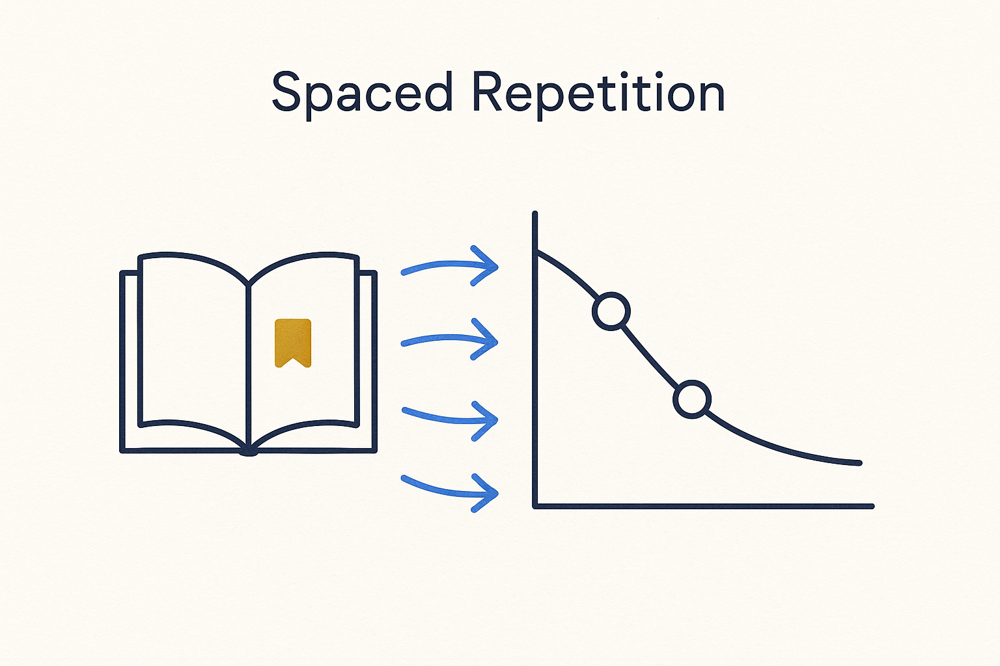

Build spaced repetition into the system — resurface key concepts, glossary and processes at increasing intervals so knowledge sticks instead of fading after one training.

> Build spaced repetition into the system — resurface key concepts, glossary and processes at increasing intervals so knowledge sticks instead of fading after one training.
Spaced repetition is the learning methodology that answers the “one-off training doesn’t stick” problem head-on. The science is old and solid: we forget on a predictable curve, and the fix is to resurface a piece of knowledge just as it’s about to fade, at gradually increasing intervals. Each well-timed review resets the curve and moves the knowledge toward permanent. It is the difference between learning something once and actually *retaining* it.
The BTM move is to build it into the system, not leave it to willpower. The key concepts, the glossary, the business model, the processes, the AI and prompt-engineering skills — all of it can be resurfaced on a schedule: small, spaced prompts that bring a concept back to attention at the right moment. Because this is all structured metadata already, the system knows what each person has seen and when, and AI can deliver the next review automatically. Learning becomes a background process, like a daily delivery, rather than an event on a calendar.
Concretely, we continuously create and update flash cards — kept as metadata and linked to the things they teach: systems, sources, methodologies, AI concepts, prompt engineering, the data model, source-specific knowledge. Because the cards live in the same structured world as the model, they stay current as the model changes, and a card can point straight back to the concept or source it came from. And we keep training ourselves on them, to keep the team sharp. This is not overhead bolted onto the real work — it *is* part of the job of the knowledge worker.
And because the results are stored, we can prove that everyone actually stays up to date. The spaced-repetition outcomes are kept as data, so staying sharp stops being a claim and becomes evidence — and that is the agreement everyone commits to and holds to, the same accountability and discipline we apply to everything else. It is a proven approach, which is why it is no longer optional. Keeping yourself and the team current in a field that changes this fast is not a personal hobby you may or may not pursue; it is a non-negotiable part of the role, the way writing minutes or versioning a decision is. We really do have to adapt to the new times — and prove that we have.
Spaced repetition is continuous learning made mechanical, and it is naturally data-driven: track what was reviewed, what stuck, and where knowledge levels are slipping, then adjust the schedule. Structure the review, and retention stops being luck.
Where it lives: the method layer of Breakthrough Modeling — learning that sticks, built into the system.